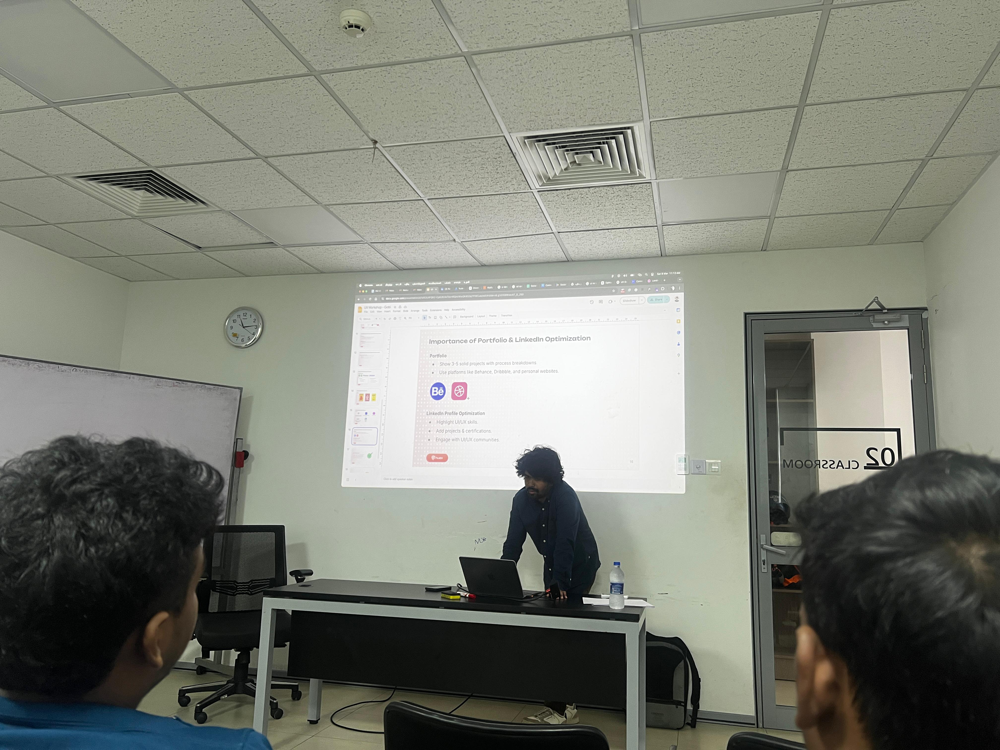
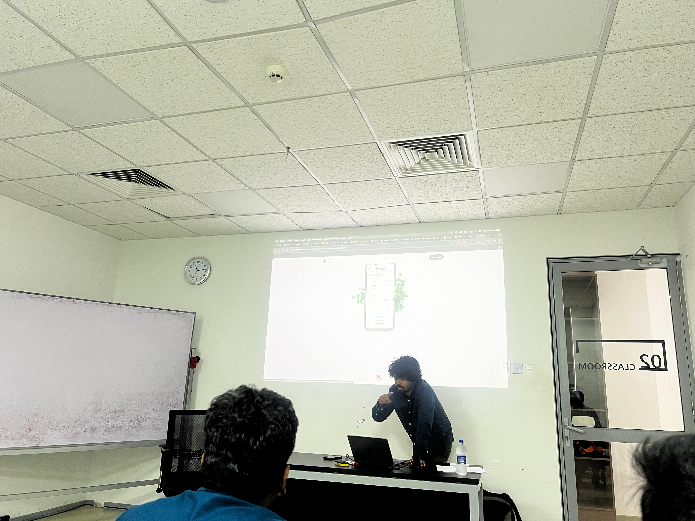
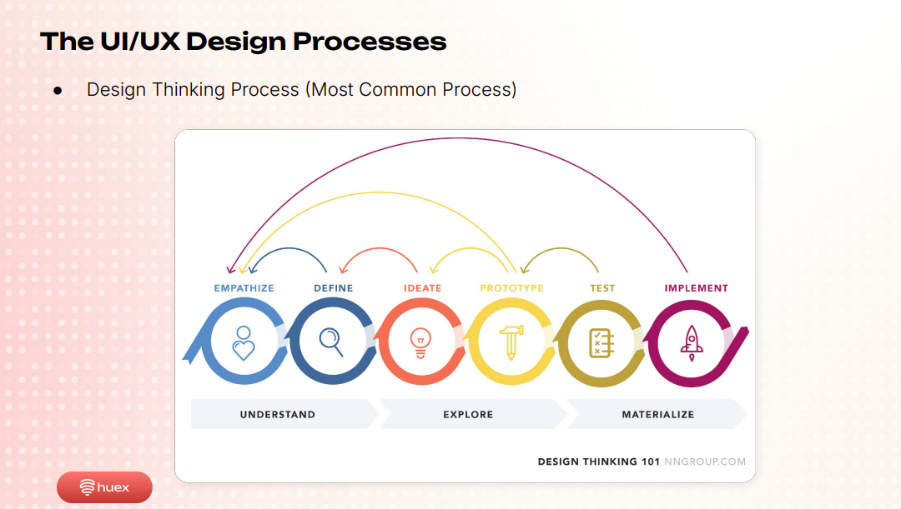

Week 5 - Job Role – UI/UX Engineering
Session Details
Date: 8th Mar 2025
Resource Person: Mr. Gobinthiran Kulendran
Designation: CEO, Huex
Topic: Job Role – UI/UX Engineering
Topic Summary
- Mr. Gobinthiran Kulendran delivered an insightful session on UI/UX engineering, explaining its critical role in creating user-friendly digital products.
- He highlighted how UI/UX enhances user retention, drives business revenue, and provides a competitive edge in the tech industry.
- The session emphasized the growing global demand for UI/UX professionals, particularly in Sri Lanka and international markets.
What Was Taught
- User Interface (UI) focuses on a product’s look and interactivity, while User Experience (UX) enhances usability, accessibility, and user satisfaction.
- The Design Thinking process—empathize, define, ideate, prototype, test, implement—is the most common UI/UX framework, alongside Double Diamond, Lean UX, and Google’s Design Sprint.
- Tools include Figma, Adobe XD, and Balsamiq for design and wireframing, and Hotjar and Clarity for user research and analytics.
- Essential skills include psychology for user behavior, critical thinking for design problems, market research for trends, communication for defending designs, empathy for user-centric design, and basic coding (HTML, CSS, JavaScript) for developer collaboration.
- Career roles include UI Designer, UX Designer, Product Designer, and UX Researcher, with growing demand in Sri Lanka (startups, banking, e-commerce) and globally (USA, UK, Middle East).
- Continuous learning, freelancing on platforms like Upwork and Fiverr, and running a UX agency were emphasized.
- User-centered design principles, a strong portfolio, and a LinkedIn presence are crucial for showcasing skills.
What Was Learned
- I gained a comprehensive understanding of the UI/UX design process, particularly the iterative Design Thinking framework, and its impact on user satisfaction and business success.
- UI/UX is about solving user problems through empathy and research, not just aesthetics.
- I learned about diverse tools (e.g., Figma for prototyping) and skills (e.g., psychology for user understanding) required in UI/UX.
- Career paths include freelancing, agency work, and roles like UX Designer or Product Designer.
- Building a portfolio with 3-5 detailed projects and optimizing my LinkedIn profile are key for networking.
- The global demand for UI/UX professionals requires continuous learning to stay competitive.
What I Plan to Implement in the Future
- I will explore online platforms like Udemy, Coursera (Google UX Design Certificate), and Interaction Design Foundation to learn UI/UX principles and tools.
- I plan to practice wireframing and prototyping using Figma and Balsamiq to enhance my design skills.
- I’ll build a portfolio showcasing 3-5 projects with detailed process breakdowns, hosted on Behance or a personal website.
- I will optimize my LinkedIn profile by highlighting UI/UX skills, projects, and certifications.
- I’ll read books like "The Design of Everyday Things" by Donald A. Norman to deepen my understanding of design principles.
- I’ll explore freelancing on Upwork to gain practical experience.
- I aim to incorporate user-centered design principles into projects and pursue a career in UI/UX, potentially as a UX Designer or Product Designer.
Session Images

Session Image 1

Session Image 2

Session Image 3